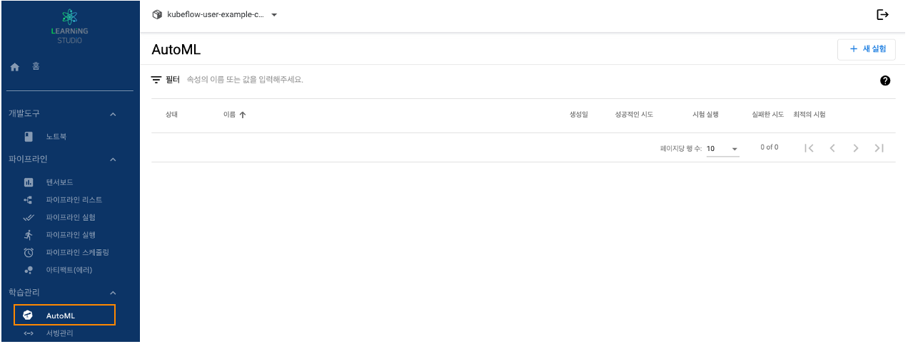
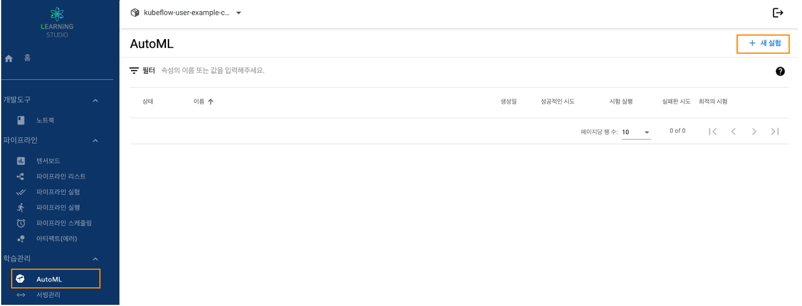
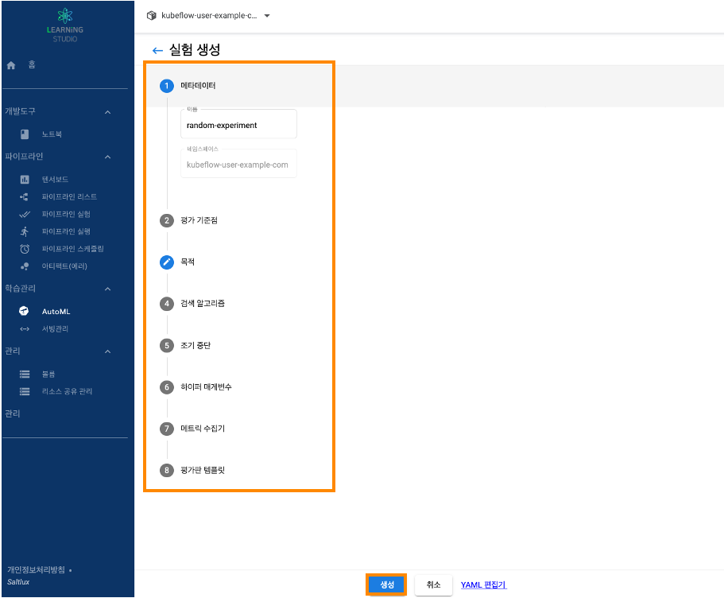
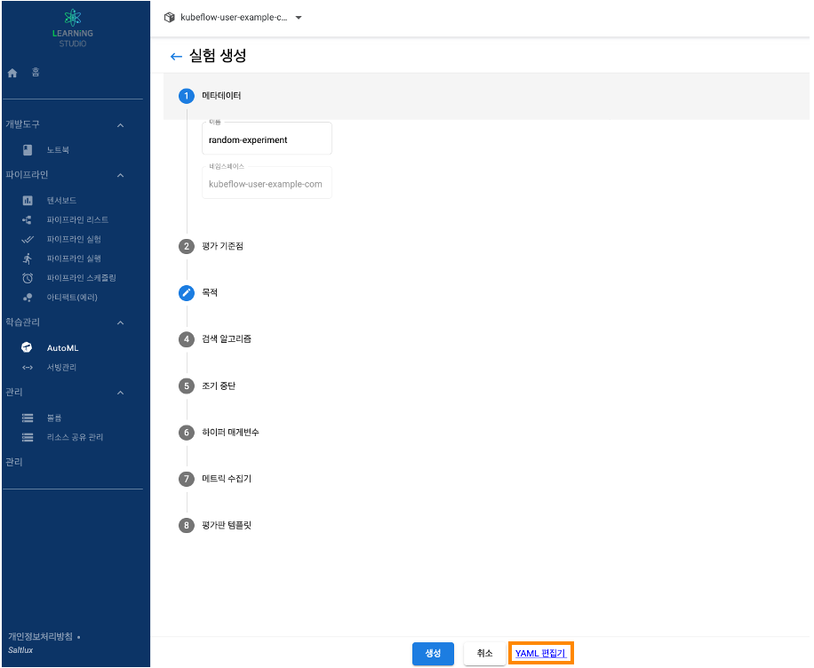
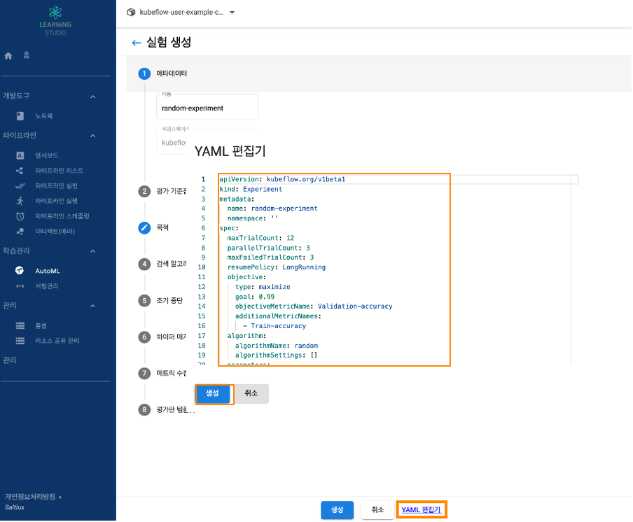
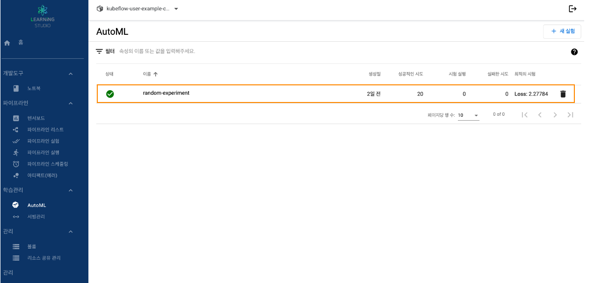
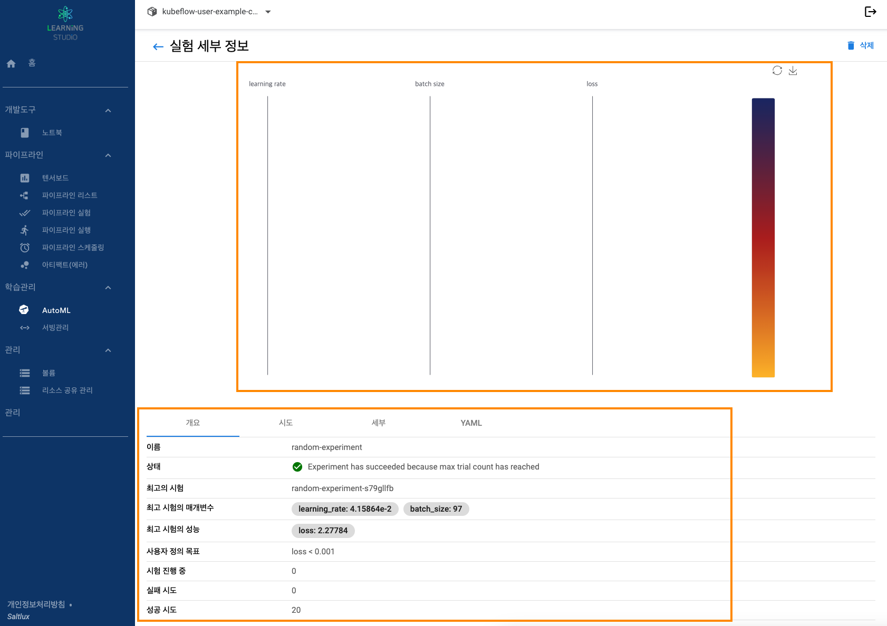
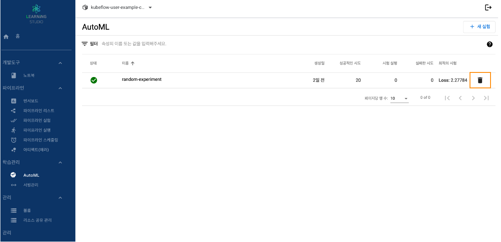

러닝스튜디오 기능별 가이드
Learning studio Manual
Step 1. AutoML 리스트
1. 러닝스튜디오 대시보드 접속합니다.
2. 좌측에 메뉴에서 학습관리 → AutoML 탭을 선택입니다.

Step 2. AutoML 만들기
1. 러닝스튜디오 대시보드 접속합니다.
2. 좌측에 메뉴에서 학습관리 → AutoML 탭을 선택입니다.
3. "새 실험" 클릭

1) 각 항목 선택하여 생성
- 각 항목에 맞는 값 선택 후 "생성"버튼 클릭

2) YAML 스크립트로 생성
- 사전에 정의한 YAML 스크립트 업데이트


4. AutoML 확인


Step 3. AutoML 삭제
- 삭제할 AutoML 리스트에서 "휴지통" 아이콘 클릭
